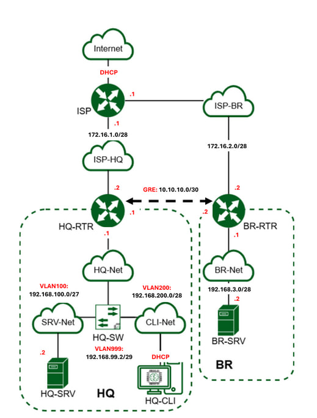

==========ISP==========
root/toor
-------имя хоста---------
hostnamectl hostname ISP
exec bash
-------настройка ВНЕШНЕГО интерфейса---------
cat /etc/net/ifaces/ens18/options
-------настройка ВНУТРЕННИХ интерфейсов---------
mkdir -p /etc/net/ifaces/ens{19,20}
echo 'TYPE=eth' | tee /etc/net/ifaces/ens{19,20}/options
echo '172.16.1.1/28' > /etc/net/ifaces/ens19/ipv4address
echo '172.16.2.1/28' > /etc/net/ifaces/ens20/ipv4address
-------настройка NAT---------
apt-get update && apt-get install nftables -y
+++
nftables.nft
cat << EOF > /etc/nftables/nftables.nft
#!/usr/sbin/nft -f
flush ruleset
table ip nat {
chain postrouting {
type nat hook postrouting priority srcnat;
oifname "ens18" masquerade
}
}
EOF
+++
cat /etc/nftables/nftables.nft
systemctl enable --now nftables
-------включение маршрутизации---------
sed -i 's/net.ipv4.ip_forward = 0/net.ipv4.ip_forward = 1/' /etc/net/sysctl.conf
systemctl restart network
sysctl net.ipv4.ip_forward
(https://wiki.archlinux.org/title/Nftables_(%D0%A0%D1%83%D1%81%D1%81%D0%BA%D0%B8%D0%B9)#%D0%9C%D0%B0%D1%81%D0%BA%D0%B0%D1%80%D0%B0%D0%B4%D0%B8%D0%BD%D0%B3)
(https://www.altlinux.org/Static_Multicast_Routing#%D0%9D%D0%B0%D1%81%D1%82%D1%80%D0%BE%D0%B9%D0%BA%D0%B0_%D0%BC%D0%B0%D1%80%D1%88%D1%80%D1%83%D1%82%D0%B8%D0%B7%D0%B0%D1%86%D0%B8%D0%B8)
==========BR-RTR====
root/toor
-------имя хоста---------
hostnamectl hostname br-rtr.au-team.irpo
exec bash
+++++++++++NETWORK++++++++++++++++++++++++
mkdir -p /etc/net/ifaces/{ens19,gre1}
echo 'TYPE=eth' | tee /etc/net/ifaces/ens{18,19}/options
-------to ISP------
echo '172.16.2.2/28' > /etc/net/ifaces/ens18/ipv4address
echo 'default via 172.16.2.1' > /etc/net/ifaces/ens18/ipv4route
echo 'nameserver 8.8.8.8' > /etc/net/ifaces/ens18/resolv.conf
-------to BR-SRV---
echo '192.168.3.1/28' > /etc/net/ifaces/ens19/ipv4address
-------включение маршрутизации---------
sed -i 's/net.ipv4.ip_forward = 0/net.ipv4.ip_forward = 1/' /etc/net/sysctl.conf
-------GRE-----------------------------
+++
cat << EOF > /etc/net/ifaces/gre1/options
TYPE=iptun
TUNTYPE=gre
TUNLOCAL=172.16.2.2
TUNREMOTE=172.16.1.2
TUNTTL=64
TUNOPTIONS='ttl 64'
EOF
+++
cat /etc/net/ifaces/gre1/options
echo "10.10.10.2/30" > /etc/net/ifaces/gre1/ipv4address
systemctl restart network
ip -br -c a
-------установка необходимого ПО-------
apt-get install frr -y
--------смена DNS-----------
rm -f /etc/net/ifaces/ens18/resolv.conf
echo $'search au-team.irpo\nnameserver 192.168.100.2' > /etc/net/ifaces/ens18/resolv.conf
--------NAT-----------------
-------nftables.nft
+++
cat << EOF > /etc/nftables/nftables.nft
#!/usr/sbin/nft -f
flush ruleset
table ip nat {
chain postrouting {
type nat hook postrouting priority srcnat;
oifname "ens18" masquerade
}
}
EOF
+++
--------TIMEZONE----------
timedatectl set-timezone Europe/Moscow
-------настройка net_admin-------------
useradd net_admin
echo "net_admin:P@ssw0rd" | chpasswd
usermod -aG wheel net_admin
echo "WHEEL_USERS ALL=(ALL:ALL) NOPASSWD: ALL" > /etc/sudoers.d/net_admin
su -l net_admin
sudo id
--------OSPF--------------
sed -i 's/ospfd=no/ospfd=yes/' /etc/frr/daemons ; grep ospf /etc/frr/daemons
+++
cat <<'EOF' > /etc/frr/frr.conf
interface gre1
ip ospf area 0
ip ospf authentication
ip ospf authentication-key P@ssw0rd
no ip ospf passive
exit
!
interface ens19
ip ospf area 0
exit
!
router ospf
passive-interface default
exit
EOF
+++
systemctl restart network
systemctl enable --now nftables frr
cat /etc/resolv.conf
ip r
==========HQ-RTR=======
root/toor
-------имя хоста---------
hostnamectl hostname hq-rtr.au-team.irpo
exec bash
+++++++++++NETWORK++++++++++++++++++++++++
mkdir -p /etc/net/ifaces/{ens19,vlan{100,200,999},gre1}
echo 'TYPE=eth' | tee /etc/net/ifaces/ens{18,19}/options
-------to ISP------
echo '172.16.1.2/28' > /etc/net/ifaces/ens18/ipv4address
echo 'default via 172.16.1.1' > /etc/net/ifaces/ens18/ipv4route
echo 'nameserver 8.8.8.8' > /etc/net/ifaces/ens18/resolv.conf
--------настройка VLAN-----------
echo $'100\n200\n999' | xargs -i bash -c 'echo -e "TYPE=vlan\nHOST=ens19\nVID={}" > /etc/net/ifaces/vlan{}/options'
cat /etc/net/ifaces/vlan999/options
echo '192.168.100.1/27' > /etc/net/ifaces/vlan100/ipv4address
echo '192.168.200.1/28' > /etc/net/ifaces/vlan200/ipv4address
echo '192.168.99.1/29' > /etc/net/ifaces/vlan999/ipv4address
-------включение маршрутизации---------
sed -i 's/net.ipv4.ip_forward = 0/net.ipv4.ip_forward = 1/' /etc/net/sysctl.conf
-------GRE-----------------------------
+++
cat << EOF > /etc/net/ifaces/gre1/options
TYPE=iptun
TUNTYPE=gre
TUNLOCAL=172.16.1.2
TUNREMOTE=172.16.2.2
TUNOPTIONS='ttl 64'
EOF
+++
cat /etc/net/ifaces/gre1/options
echo "10.10.10.1/30" > /etc/net/ifaces/gre1/ipv4address
systemctl restart network
ip -br -c a
ping 10.10.10.2 -c 3
ping ya.ru -c 2
-------установка необходимого ПО-------
apt-get install frr dnsmasq nftables -y
--------смена DNS-----------
rm -f /etc/net/ifaces/ens18/resolv.conf
echo $'search au-team.irpo\nnameserver 192.168.100.2' > /etc/net/ifaces/vlan100/resolv.conf
--------NAT-----------------
-------nftables.nft
+++
cat << EOF > /etc/nftables/nftables.nft
#!/usr/sbin/nft -f
flush ruleset
table ip nat {
chain postrouting {
type nat hook postrouting priority srcnat
oifname "ens18" masquerade
}
}
EOF
+++
systemctl enable --now nftables
--------TIMEZONE----------
timedatectl set-timezone Europe/Moscow
-------настройка net_admin-------------
useradd net_admin
echo "net_admin:P@ssw0rd" | chpasswd
usermod -aG wheel net_admin
echo "WHEEL_USERS ALL=(ALL:ALL) NOPASSWD: ALL" > /etc/sudoers.d/net_admin
su -l net_admin
sudo id
--------OSPF--------------
sed -i 's/ospfd=no/ospfd=yes/' /etc/frr/daemons ; grep ospf /etc/frr/daemons
+++
cat <<'EOF' > /etc/frr/frr.conf
interface gre
no ip ospf passive
exit
!
interface gre1
ip ospf area 0
ip ospf authentication
ip ospf authentication-key P@ssw0rd
no ip ospf passive
exit
!
interface vlan100
ip ospf area 0
exit
!
interface vlan200
ip ospf area 0
exit
!
interface vlan999
ip ospf area 0
exit
!
router ospf
passive-interface default
exit
EOF
+++
--------DHCP------------
sed -i 's/AUTO_LOCAL_RESOLVER=yes/AUTO_LOCAL_RESOLVER=no/' /etc/sysconfig/dnsmasq ; grep AUTO_LOCAL_RESOLVER /etc/sysconfig/dnsmasq
+++
cat <<'EOF' > /etc/dnsmasq.conf
port=0
interface=vlan200
listen-address=192.168.200.1
dhcp-authoritative
dhcp-range=interface:vlan200,192.168.200.2,192.168.200.2,255.255.255.240,6h
dhcp-option=3,192.168.200.1
dhcp-option=6,192.168.100.2
leasefile-ro
EOF
systemctl enable --now frr dnsmasq ; ss -lun | grep 67
systemctl restart network
cat /etc/resolv.conf
ip r | grep ospf
==========HQ-SRV==========
СТАВИМ ТЕГ VLAN 100 НА ИНТЕРФЕЙС
root/toor
-------имя хоста/NTP---------
hostnamectl hostname hq-srv.au-team.irpo
exec bash
timedatectl set-timezone Europe/Moscow
-------настройка интерфейсов-------------
echo 'TYPE=eth' > /etc/net/ifaces/ens18/options
echo '192.168.100.2/27' > /etc/net/ifaces/ens18/ipv4address
echo 'default via 192.168.100.1' > /etc/net/ifaces/ens18/ipv4route
echo 'nameserver 8.8.8.8' > /etc/net/ifaces/ens18/resolv.conf
systemctl restart network
ping zz.ru -c3
-------настройка sshuser-------------
useradd -u 2026 sshuser
echo "sshuser:P@ssw0rd" | chpasswd
usermod -aG wheel sshuser
echo "WHEEL_USERS ALL=(ALL:ALL) NOPASSWD: ALL" > /etc/sudoers.d/sshuser
su -l sshuser
sudo id
--------настройка SSH----------------
echo "Authorized access only" > /etc/openssh/banner
echo -e "Port 2026\nMaxAuthTries 2\nAllowUsers sshuser\nBanner /etc/openssh/banner\n" >> /etc/openssh/sshd_config
systemctl restart sshd
ss -ltnp | grep sshd
ssh sshuser@127.0.0.1 -p 2026
-------установка необходимого ПО-------
apt-get update && apt-get install bind bind-utils -y
--------смена DNS-----------
echo $'search au-team.irpo\nnameserver 127.0.0.1' > /etc/net/ifaces/ens18/resolv.conf
--------BIND9---------------
rndc-confgen -a -c /etc/bind/rndc.key
+++
cat <<'EOF' > /etc/bind/options.conf
logging { };
options {
listen-on { localnets; 127.0.0.1; };
forwarders { 77.88.8.7; 77.88.8.3; };
recursion yes;
allow-recursion { any; };
allow-query { any; };
dnssec-validation no;
directory "/etc/bind/zone";
dump-file "/var/run/named/named_dump.db";
statistics-file "/var/run/named/named.stats";
recursing-file "/var/run/named/named.recursing";
secroots-file "/var/run/named/named.scroots";
pid-file none;
};
zone "au-team.irpo" {
type master;
file "au-team.irpo";
};
zone "168.192.in-addr.arpa" {
type master;
file "168.192.in-addr.arpa";
};
EOF
+++
+++
cat <<'EOF' > /etc/bind/zone/au-team.irpo
$TTL 1D
@ IN SOA au-team.irpo. root.au-team.irpo. (
2025020600 ; serial
12H ; refresh
1H ; retry
1W ; expire
1H ; ncache
)
@ IN NS hq-srv.au-team.irpo.
hq-rtr IN A 192.168.100.1
hq-srv IN A 192.168.100.2
hq-cli IN A 192.168.200.2
br-rtr IN A 192.168.1.1
br-srv IN A 192.168.1.2
docker IN A 172.16.1.1
web IN A 172.16.2.1
EOF
+++
+++
cat <<'EOF' > /etc/bind/zone/168.192.in-addr.arpa
$TTL 1D
@ IN SOA au-team.irpo. root.au-team.irpo. (
2025020600 ; serial
12H ; refresh
1H ; retry
1W ; expire
1H ; ncache
)
IN NS au-team.irpo.
1.100 IN PTR hq-rtr.au-team.irpo.
2.100 IN PTR hq-srv.au-team.irpo.
2.200 IN PTR hq-cli.au-team.irpo.
EOF
+++
chown :named /etc/bind/zone/au-team.irpo /etc/bind/zone/168.192.in-addr.arpa
systemctl enable --now bind
service network restart
host br-rtr
host -t PTR 192.168.100.2
==========BR-SRV========== root/toor -------имя хоста/NTP--------- hostnamectl hostname br-srv.au-team.irpo exec bash timedatectl set-timezone Europe/Moscow -------настройка интерфейсов------------- echo 'TYPE=eth' > /etc/net/ifaces/ens18/options echo '192.168.3.2/26' > /etc/net/ifaces/ens18/ipv4address echo 'default via 192.168.3.1' > /etc/net/ifaces/ens18/ipv4route echo $'search au-team.irpo\nnameserver 192.168.100.2' > /etc/net/ifaces/ens18/resolv.conf systemctl restart network ping hq-srv -c 3 -------настройка sshuser------------- useradd -u 2026 sshuser echo "sshuser:P@ssw0rd" | chpasswd usermod -aG wheel sshuser echo "WHEEL_USERS ALL=(ALL:ALL) NOPASSWD: ALL" > /etc/sudoers.d/sshuser su -l sshuser sudo id --------настройка SSH---------------- echo "Authorized access only" > /etc/openssh/banner echo -e "Port 2026\nMaxAuthTries 2\nAllowUsers sshuser\nBanner /etc/openssh/banner\n" >> /etc/openssh/sshd_config systemctl restart sshd ss -ltnp | grep sshd ==========HQ-CLI========== СТАВИМ ТЕГ VLAN 200 НА ИНТЕРФЕЙС -------имя хоста/NTP--------- hostnamectl hostname hq-cli.au-team.irpo exec bash timedatectl set-timezone Europe/Moscow ip -br -c a
Расчёт пулов IP адреов для сетей составлен в соответствии с заданием На HQ-RTR и BR-RTR (Linux): ip -4 a На HQ-RTR и BR-RTR (EcoRouterOS): show ip interfaces # Обратить внимание, что интерфейсы настроены и маски сетей в соответствии с заданием Установлены IP адреса, имена устройств на всех устройствах. Время установлено согласно месту проведению экзамена На машинах Linux: ip -br -4 -c a timedatectl show | grep Timezone На машинах EcoRouterOS: show ip interfaces show hostname Настроена динамическая маршрутизация в соответствии с заданием На HQ-RTR и BR-RTR (Linux): ip r | grep ospf vtysh -c 'sh ip ospf interface | include interface|is up' vtysh -c 'show running-config' # Обратить внимание на настройку пассивных интерфейсов На HQ-RTR и BR-RTR (EcoRouterOS): show ip route show ip ospf interface brief show running-config # В списке интерфейсов должен быть только туннельный # Обратить внимание, что необходимые маршруты назначены по протоколу динамической маршрутизации # Пассивные интерфейсы настроены # Допустимые варианты: OSPF и IS-IS Настройка автоматического распределения IP-адресов на маршрутизаторе HQ-RTR Проверка получения адреса автоматически на HQ-CLI: dhcpcd -n ip addr show dynamic ip route get 1 resolvconf -v # Сверить примененные настройки: маршрут по умолчанию, DNS, DNS-суффикс # Проверка, активен ли сервис DHCP на HQ-RTR: На HQ-RTR (Alt JeOS): ss -lenu | grep 67 На HQ-RTR (EcoRouterOS): show runing config Настройка локальных учётных записей в соответсвии с заданием На HQ-RTR и BR-RTR (Linux): logout # вход под net_admin sudo id На HQ-RTR и BR-RTR (EcoRouterOS): logout # вход под net_admin enable На остальных машинах: logout # вход под sshuser id # В выводе uid должен быть установлен согласно заданию sudo id # При выполнении команды "sudo id" команда не должна запрашивать пароль и в выводе id должна быть информация о пользователе root Все устройства имеют сетевую связность и выход в интернет На всех машинах: ping 8.8.8.8 -c3 # Если пинг не проходит на одном устройстве - минус балл # Если не пингует ни на одном, тогда пинг шлюза Конфигурация сервера доменных имён содержит зоны прямого просмотра и зоны обратного просмотра в соответствии с заданием. Для обеспечения резервирования данных реализована пересылка на любой общедоступный сервер. На HQ-SRV: ss -lnu | grep 53 На HQ-CLI: resolvconf -v host hq-srv host 192.168.100.2 <----ip адрес hq-srv> host hq-rtr host 192.168.100.1 <----ip адрес hq-rtr> host hq-cli host 192.168.200.2 <----ip адрес hq-cli> host br-srv host br-rtr host docker host web host ya.ru Настоен тунель между офисами HQ и BR На HQ-RTR и BR-RTR (Linux): ip addr | grep gre1 ping 10.10.10.1 -c 3 <----внутренний ip соседа> (на BR-RTR) # Должен быть gre или tun интерфейс с peer адресом противоположного RTR Настроен протокол удаленного доступа к устройству HQ-SRV и BR-SRV с использоанием нестандартного номера порта в соответствии с заданием На HQ-SRV и BR-SRV: ssh sshuser@127.0.0.1 -p 2026 # Проверка возможности коннекта, логина и баннера # Затем, проверка кол-ва попыток входа. Попробуйте два раза неудачно залогиниться # После двух неудачных попыток сеанс должен завершиться ошибкой: ssh sshuser@127.0.0.1 -p <порт по заданию> # Проверка списка разрешенных пользователей для логина: sshd -T | grep users Настроены подинтерфейсы на HQ-RTR в соответствии с заданием На HQ-RTR (Linux): # Если Linux VLANs ip -d l sh type vlan # Если openvswitch: ip l sh type openvswitch ovs-vsctl show # Проверить настройки коммутатора HQ-Net (виртуального или физического)
